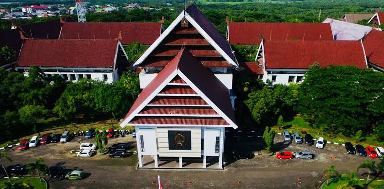
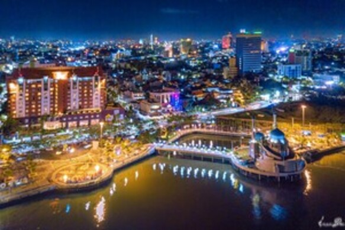

Sejarah

Kata Bandung berasal dari kata bendung atau bendungan karena terbendungnya
sungai Citarum oleh lava Gunung Tangkuban Parahu yang lalu membentuk
telaga. Legenda yang diceritakan oleh orang-orang tua di Bandung
mengatakan bahwa nama Bandung diambil dari sebuah kendaraan air yang
terdiri dari dua perahu yang diikat berdampingan yang disebut perahu
bandung yang digunakan oleh Bupati Bandung, R.A. Wiranatakusumah II, untuk
melayari Ci Tarum dalam mencari tempat kedudukan kabupaten yang baru untuk
menggantikan ibu kota yang lama di Dayeuhkolot.
Berdasarkan filosofi Sunda, kata Bandung juga berasal dari kalimat
Nga-Bandung-an Banda Indung, yang merupakan kalimat sakral dan luhur
karena mengandung nilai ajaran Sunda. Nga-Bandung-an artinya menyaksikan
atau bersaksi. Banda adalah segala sesuatu yang berada di alam hidup yaitu
di bumi dan atmosfer, baik makhluk hidup maupun benda mati. Sinonim dari
banda adalah harta. Indung berarti Ibu atau Bumi, disebut juga sebagai Ibu
Pertiwi tempat Banda berada.
Geografi

Makassar adalah ibu kota provinsi Sulawesi Selatan, terletak di bagian selatan Pulau Sulawesi yang dulunya bernama Ujung Pandang, terletak antara 119º24'17'38" Bujur Timur dan 5º8'6'19" Lintang Selatan yang berbatasan dengan Utara dengan Kabupaten Maros dan Kabupaten Pangkajene dan Kepulauan (Kabupaten Liukang Tupabiring), di sebelah timur Kabupaten Maros (Kecamatan Mocongloe) dan Kabupaten Gowa (Kecamatan Pattallassang), di sebelah selatan Kabupaten Gowa (Kabupaten Somba Opu dan Barombong) dan Kabupaten Takalar (Kabupaten Galesong Utara), dan di sebelah barat oleh Selat Makassar. Kota Makassar memiliki topografi dengan kemiringan tanah 0-2° (datar) dan kemiringan tanah 3-15° (bergelombang). Luas Kota Makassar tercatat 175,77 km
Kota Bandung dialiri dua sungai utama, yaitu Sungai Cikapundung dan Sungai
Citarum beserta anak-anak sungainya yang pada umumnya mengalir ke arah
selatan dan bertemu di Sungai Citarum. Dengan kondisi yang demikian,
Bandung selatan sangat rentan terhadap masalah banjir terutama pada musim
hujan.
Wisata
Makassar, ibu kota Provinsi Sulawesi Selatan, memiliki banyak destinasi wisata menarik yang
mencakup wisata alam, sejarah, budaya, dan kuliner. Berikut beberapa wisata populer di Makassar:
Pantai Losari

Pantai Losari adalah ikon wisata kota Makassar yang terkenal dengan pemandangan matahari terbenamnya yang indah.
Terletak di tepi barat kota, pantai ini menjadi tempat favorit untuk bersantai, berjalan-jalan, dan menikmati kuliner
khas Makassar seperti pisang epe. Meski tidak memiliki pasir seperti pantai pada umumnya, Pantai Losari memiliki area
promenade yang luas, tempat warga lokal dan wisatawan berkumpul untuk menikmati suasana pesisir yang tenang.
Benteng Rotterdam (Fort Rotterdam)

Benteng Rotterdam, atau Fort Rotterdam, adalah benteng peninggalan kolonial Belanda di Makassar yang dibangun
pada abad ke-17 oleh Kerajaan Gowa-Tallo dan kemudian direbut serta direnovasi oleh Belanda. Benteng ini menjadi
markas pertahanan dan pusat administrasi Belanda di Sulawesi. Di dalamnya terdapat Museum La Galigo, yang menyimpan
koleksi sejarah dan budaya Sulawesi Selatan, serta menjadi saksi perjuangan Sultan Hasanuddin melawan penjajahan.
Kini, Benteng Rotterdam adalah destinasi wisata sejarah yang populer, menawarkan wawasan tentang masa kolonial dan warisan budaya setempat.